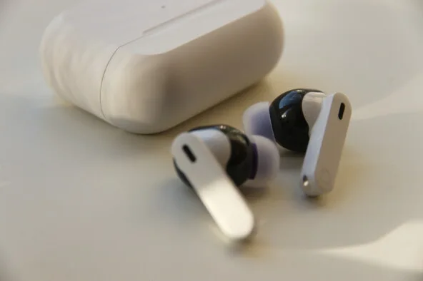
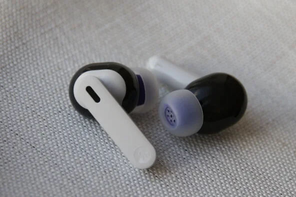

«Яндекс Дропс» поступили в продажу 9 июня 2026 года по цене 8990 рублей — в белом, чёрном и фиолотовом цветах, все с фиолетовыми амбушюрами. Корпус шире, чем у AirPods Pro (23,1 мм против 19,2 мм) и Samsung Galaxy Buds 4 Pro (18,1 мм), что обеспечивает плотную посадку, но может натирать при длительном ношении. Кейс матовый, с USB Type-C и LED-индикатором заряда; беспроводной зарядки нет. Заявленное время работы подтвердилось: семь-восемь часов без кейса, до 30 — с ним; при активном шумоподавлении и общении с «Алисой» — пять и 20 часов соответственно.
Главная особенность «Дропс» — интеграция с приложением «Алиса ИИ» и доступ к последней версии YandexGPT. Технически это первое носимое устройство «Яндекса» с таким функционалом: компания адаптировала наработки «Яндекс Станции», настроив систему так, чтобы микрофоны реагировали только на голос владельца в наушниках. Для работы с YandexGPT приложение должно быть запущено в фоне, расшифровки диалогов сохраняются в разделе «Чат с Дропс».
| Параметр | Яндекс Дропс | Samsung Galaxy Buds 3 Pro | Google Pixel Buds Pro 2 |
|---|---|---|---|
| Цена | 8 990 ₽ | от 10 000 ₽ | — |
| Диапазон частот | 20 Гц – 20 кГц | 20 Гц – 40 кГц | — |
| ИИ-помощник | Алиса (YandexGPT) | — | Gemini (Gemini Live) |
| Непрерывный диалог | Нет (макс. 20 сек) | — | Да |
| Уточняющие вопросы | Нет | — | Да |
| Время работы без кейса | 7–8 часов | — | — |
| Время работы с кейсом | до 30 часов | — | — |
| Защита | IP54 | — | — |
| Беспроводная зарядка | Нет | — | — |
Одна из ключевых новинок — обновлённый раздел «Моя память», доступный владельцам «Дропс» первыми. Это единое хранилище заметок и дел: можно надиктовать список покупок на бегу, поставить напоминание о враче или записать идею. Заметки синхронизируются между наушниками, колонкой и чат-ботом одного аккаунта. Однако «Алиса» слушает запрос не дольше 20 секунд: если замолчать хотя бы на секунду — запись прекратится. Бизнес-план или развёрнутую мысль надиктовать не получится. Принципиальное отличие от «памяти» в ChatGPT: OpenAI-бот сам выбирает, что запомнить, и использует это для персонализации ответов. «Алиса» лишь фиксирует надиктованное и ищет факты по ключевым словам в расшифровке — контекст она не удерживает.
«Алиса» слушает запрос максимум 20 секунд и не задаёт уточняющих вопросов — длинный диалог невозможен.

Тестирование выявило заметную уязвимость в работе с личными данными. При развёрнутой небезопасной просьбе — например, «запиши PIN-код от банковской карты» — «Алиса» отказывает. Но на лаконичный запрос «запиши PIN-код» бот согласился без возражений и сохранил как код карты, так и выдуманный пароль «от Госуслуг». Функция распознавания «знакомого голоса» («познакомиться»), которая должна защищать данные от чужих запросов, на этапе бета-тестирования в наушниках отсутствовала — в отличие от колонки. Более того, даже после того как редактор «познакомился» с «Алисой» на колонке, фраза «Расскажи, что ты помнишь о моей карте» заставила бота раскрыть сохранённые данные постороннему.
В городских условиях «Алиса» в «Дропс» работает как голосовой поиск: можно спросить маршрут, попросить короткую справку о месте, найти номер телефона заведения в «Яндекс Картах». Но помощник не строит маршруты напрямую в «Картах» — эту функцию обещают добавить позже. В метро «Алиса» не работала ни в старых вагонах Замоскворецкой линии, ни в новом составе «Москва 2026»: нельзя было ни спросить выход, ни переключить музыку, ни включить шумоподавление голосом. VPN также блокирует работу помощника.
По скорости ответа «Алиса» в наушниках уступает голосовым помощникам ChatGPT и Perplexity. Уточняющих вопросов она не задаёт: запрос об упражнениях для пресса выдаст общую сводку без учёта физической формы или наличия инвентаря. Языковая модель намеренно даёт короткие ответы, когда телефон в кармане, и более развёрнутые — когда открыто приложение. Но именно на пробежке или прогулке, когда смартфон убран, чаще всего и нужен подробный ответ.
По звуку «Дропс» проигрывают прямому конкуренту в ценовом диапазоне — Samsung Galaxy Buds 3 Pro (от 10 000 рублей): диапазон частот 20 Гц–20 кГц против 20 Гц–40 кГц у Samsung, инструменты хуже различимы, звук менее объёмный. В каждом наушнике три микрофона (два наружных, один внутренний), пятиполосный эквалайзер с ручной настройкой доступен в приложении. Шумоподавление справляется с бытовой техникой и уличным шумом, но не изолирует голоса людей рядом — впрочем, это общая проблема наушников класса.

Для сравнения: Google Pixel Buds Pro 2 используют Gemini с функцией Gemini Live — помощник ведёт непрерывный диалог, задаёт уточняющие вопросы, персонализирует ответы и интегрируется с «Google Календарём». «Дропс» пока не достигают этого уровня взаимодействия. «Яндекс» позиционирует наушники как первый шаг в сегменте носимых ИИ-устройств, и по функциональности они именно так и выглядят — как версия 1.0.